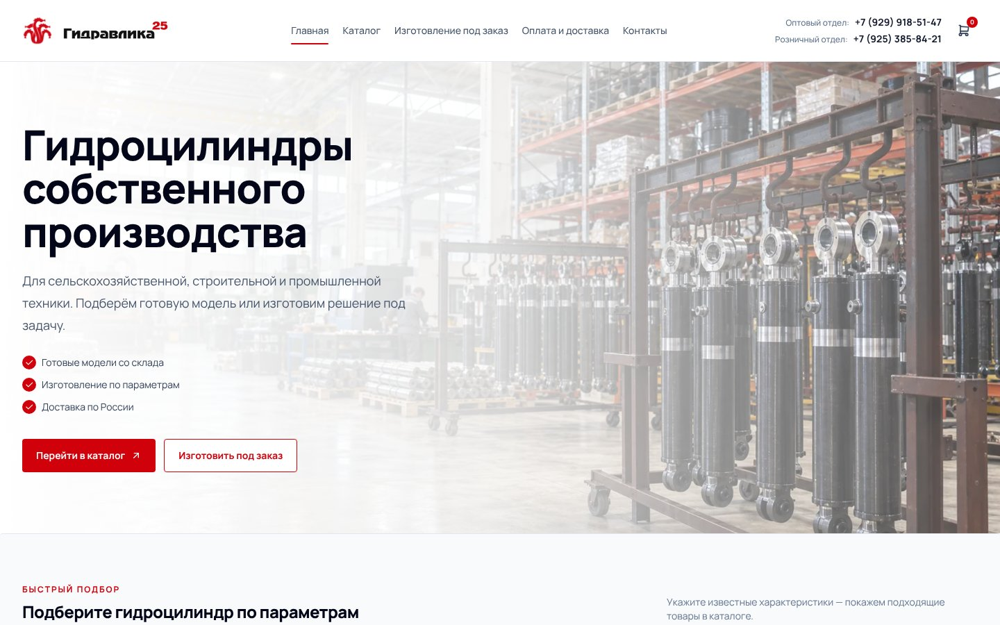
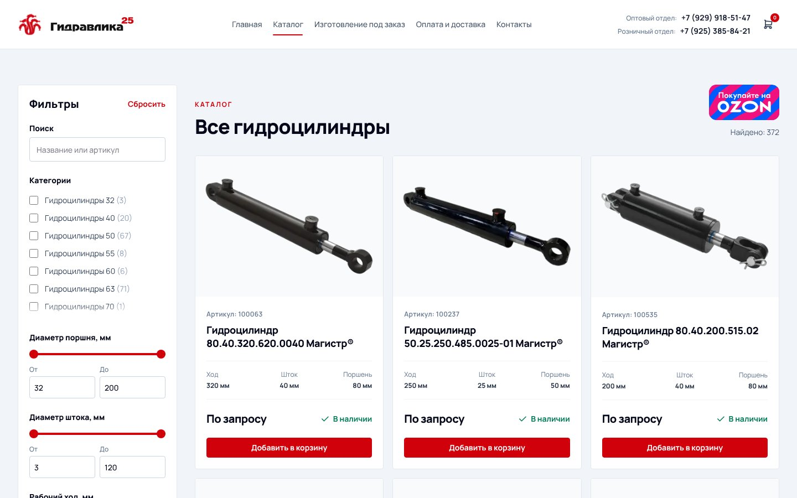
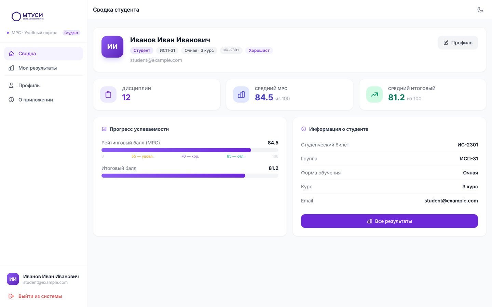
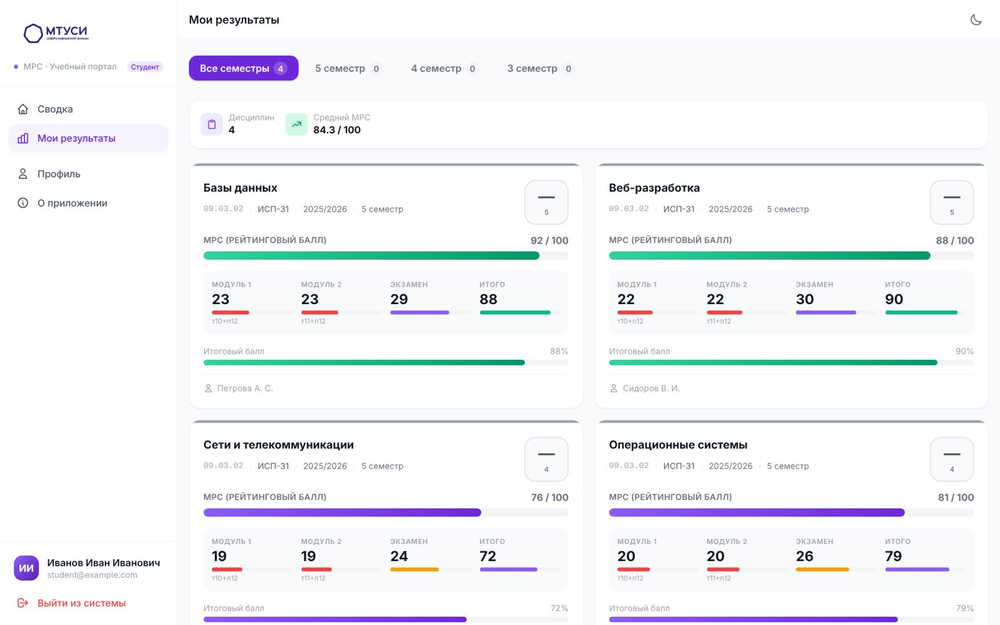

Гидравлика 25
Сайт с каталогом, CRM для отдела продаж, панель управления каталогом и API. Всё в одном монорепозитории.
React, Next.js, TypeScript, NestJS, Prisma, PostgreSQL, Tailwind, Docker


SKF MTUCI LMS
Учебный портал СКФ МТУСИ: студенты смотрят оценки, преподаватели загружают ведомости из Excel, администратор добавляет преподавателей.
React, Vite, Tailwind, Docker, Nginx


Скриншоты с тестовыми данными.
ЭкоСкан
Приложение для сообщений о городских проблемах: фото, описание и геолокация уходят в администрацию. Командный студенческий проект.
Vue 3, TypeScript, Tailwind, PrimeVue, Яндекс Карты